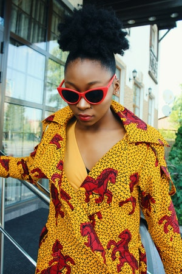

Anteojos de Sol
Estos icónicos lentes de sol, son una declaración de actitud y estilo. Pero también los puedes llamar los "regalos perfectos". Inspírate con nuestra selección y encuentra el regalo perfecto.
Antejos Recetados
Los anteojos recetados que estas necesitando. Nuestro equipo de profesionales altamente capacitado y con muchos años de experiencia los preparan para vos.

Lentes de contacto
En nuestra Óptica encontrará especialistas en Contactología. Nuestro objetivo primordial es brindarle una atención científica y personalizada para alcanzar la mejor solución a su problema visual.